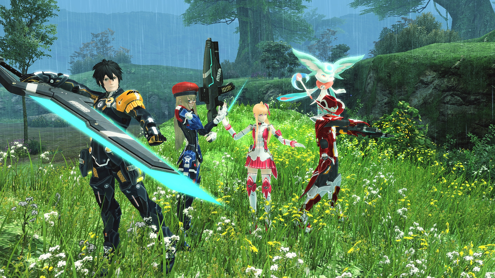

Sonic the Hedgehog

Sonic, ou Sonic the Hedgehog (ソニック・ザ・ヘッジホッグ, Sonikku za Hejjihoggu?), est une série de jeux vidéo, développée par la firme japonaise Sega, depuis 1991. Elle met en avant la mascotte de la firme Sonic, un hérisson bleu anthropomorphe, luttant contre l'antagoniste principal de la série, le Dr Robotnik. Sonic doit habituellement déjouer les plans de Robotnik dans son idée de domination du monde. Le premier jeu de la série, publié en 1991, est produit par le studio Sonic Team de Sega, à la suite d'une demande de ce dernier pour la conception d'une mascotte ; le titre est un franc succès, permet la production d'un bon nombre de suites et permet à Sega d'accéder au statut de l'une des plus imposantes sociétés vidéoludiques dans l'histoire des consoles 16-bit du début au milieu des années 1990.
Système de jeu
Sonic The Hedgehog est un jeu de plates-formes en 2D. Le joueur contrôle Sonic, un hérisson bleu très rapide. Il rencontrera sur sa route d'innombrables robots qu'il a la possibilité de détruire. Cela délivrera quelques animaux et rapportera des points au joueur. L'attaque que Sonic peut utiliser se nomme Super Sonic Spin Attack (attaque tournoyante supersonique en français) qui consiste à se mettre en boule pendant sa course pour charger ses ennemis. Il peut également sauter en boule sur ses adversaires. Le joueur trouvera aussi des anneaux éparpillés dans les niveaux. S'il en obtient 100, il gagne une vie supplémentaire. Lorsqu'il est touché par un ennemi ou par un piège, tous ses anneaux se dispersent et il n'a que quelques secondes pour les récupérer. S'il est touché alors qu'il ne possède plus d'anneau, il perd une vie. Sur les versions Master System et Game Gear, les anneaux perdus à la suite de l'attaque d'un ennemi ne peuvent pas être récupérés.
Niveaux speciaux
Lorsque le joueur atteint la fin d'un niveau avec au moins 50 anneaux, il peut sauter dans un anneau géant qui l'emmène dans un niveau spécial. Ce dernier ressemble à un labyrinthe flottant qui tourne sur lui-même. Sonic doit s'y frayer un chemin jusqu'à une Émeraude du Chaos. Il y en a six à récupérer dans tout le jeu. Ces joyaux (les émeraudes du chaos) ont de mystérieux pouvoirs et les posséder tous modifiera la fin du jeu. Si 50 anneaux sont recueillis avant que Sonic touche un panneau "GOAL" ou obtient l’Émeraude du Chaos, un "Continuer" sera attribué au joueur en sortant du niveau. Il y a au total dix occasions d'obtenir une Émeraude du Chaos, ce qui signifie que le joueur peut manquer un stage bonus quatre fois s'ils souhaite récupérer les six émeraudes restantes avant la fin du jeu. Sur les versions Game Gear et Master System du jeu, l'étape spéciale est une sorte de flipper géant truffé de ressorts où le joueur a environ une minute pour le traverser, sinon tous les bonus accumulés seront perdus. Cette étape spéciale permet au joueur de gagner un continue et une vie supplémentaire. Pour y accéder, il faut passer le panneau de fin de niveau avec plus de cinquante anneaux. Quant aux émeraudes du Chaos, elles doivent être trouvées dans les zones elles-mêmes dans l'acte 1 ou 2.
Phantasy Star IV
Phantasy Star IV: The End of the Millennium (ファンタシースター 千年紀の終りに, Fantashī Sutā Sennenki No Owari Ni?) est un jeu vidéo de rôle développé par Sega AM7 et édité par Sega en 1994 sur Mega Drive. Il s'agit du quatrième épisode de la série Phantasy Star.